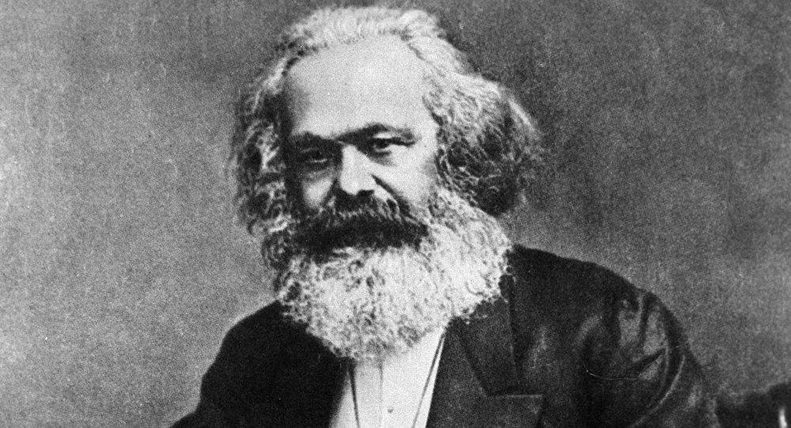

My synposes and notes on Capital Vol 1 Part I by Karl Marx <*- home: away from foundational challenges to capitalism 
Chapter 1: Commodities (Read here) I see the chapter essentially posing three constructions that conclude into a final argument(4): 1. The commensurability and exchangeability of different commodities becomes possible only by virtue of a common social substance that is congealed in each - Labor - abstract human labor that describes all the varied particular specialized labor that goes into different types of commodities. Such labor is the measure of value because it transforms natural material for use making the object/thing a use value. When it is exchanged by one agent/individual/group for another individual's object - both of which serving human needs/wants that go beyond those of the laborer, it becomes a commodity that expresses the value of the labor in it through exchange value. This expression gives the appearance of a relation between commodities that is social. 2. In the course of such exchange, different quantities of commodities become commensurate to each other. This is determined by the average socially necessary labor time that goes into producing them and which describes the proportion by which they are exchanged. Said proportion also depends on the productiveness of said labor 3. In the exchange of these commodities, one commodity usually emerges (out of practical necessity or repeated exchange) that is set apart to serve as the "universal equivalent", a commodity which can express the relative value of all commodities - and is usually something malleable/divisible for convenience - ie gold. The emergence of money occurs this way. 4. Bourgeois economists see the exchange of commodities in definite proportion and make the mistake of assuming that the value expressed in exchange are inherent to the commodity, by virtue of its physical properties and wonderful natural characteristics. This is fetishism and a complete misjudgment of how this value emerges. Since no chemist has seen the value of a diamond written in graphite moly45ecules. The true source of value, that bourgeois economists don't realize but free market hawkers do resides in the labor congealed in said commodity. The chapter concludes by refuting the mercantilists and older economists who fetishize commodities and see their value inherent in physical properties instead of in the labor of individual men who enter into a social relationship with each other through this exchange [making it appear as if this social relation exists between objects/commodities, when it is between the men who produce them] Noteworthy excerpts and important questions for the left:1. "The wealth of those societies in which the capitalist mode of production prevails, presents itself as “an immense accumulation of commodities,”[1] its unit being a single commodity.A commodity is, in the first place, an object outside us, a thing that by its properties satisfies human wants of some sort or another. The nature of such wants, whether, for instance, they spring from the stomach or from fancy, makes no difference."
Assumptions in terminology: capitalism. Does it make no difference if the desire is that of an essential necessity compared to a fanciful want? "From each according to his ability, to each according to his need"?2. "Let us take two commodities, e.g., corn and iron. The proportions in which they are exchangeable, whatever those proportions may be, can always be represented by an equation in which a given quantity of corn is equated to some quantity of iron: e.g., 1 quarter corn = x cwt. iron. What does this equation tell us? It tells us that in two different things – in 1 quarter of corn and x cwt. of iron, there exists in equal quantities something common to both. The two things must therefore be equal to a third, which in itself is neither the one nor the other. Each of them, so far as it is exchange value, must therefore be reducible to this third."
Is it justified to describe a social transaction in the form of such an equivalence? Wouldn't a formal mathematical relation between the equivalence of labor congealed in both suffice? Something of the sort SNLT(corn(1qrtr)) = SNLT(Iron(1kg)). The construction of the argument for an underlying common property could be better and likely not structurally sound. This sketchy equivalence also forms the basis of highly questionable economic analysis using dialectics in section 3 to describe the emerge of money using "relative form" value and "equivalent form" value to describe the emergence of the money commodity.3. "A use value, or useful article, therefore, has value only because human labour in the abstract has been embodied or materialised in it. How, then, is the magnitude of this value to be measured? Plainly, by the quantity of the value-creating substance, the labour, contained in the article. The quantity of labour, however, is measured by its duration, and labour time in its turn finds its standard in weeks, days, and hours. "
Probably one of the most contentious pieces in the text. Surely something that characterises usefulness of an article to the user of the article cannot be measured by a property that is so entirely independent of its usage? If I go to the market having spent X labor time on a coat. The amount it is exchanged for might depend on: - whether another producer even needs a coat - the weather - the existence of other coats in the area produced differently and more/less efficiently in terms of labor embodied I'm not sure how marx reconciles market demand as a factor in determining value of commodities. perhaps that determines price, as distinct from commodities. I'm yet to discover the complete system. A friend suggests that the exchange value is characterized not by anomalies but the value at which one is consistently able to exchange a commodity with another in a market. This seems like an added theoretical modeling aspect to explain behavior that i find inelegant as a solution. But he may be right. How does marx get around the issue of lazy labor increasing padding the value of a commodity?4."Some people might think that if the value of a commodity is determined by the quantity of labour spent on it, the more idle and unskilful the labourer, the more valuable would his commodity be, because more time would be required in its production. The labour, however, that forms the substance of value, is homogeneous human labour, expenditure of one uniform labour power. The total labour power of society, which is embodied in the sum total of the values of all commodities produced by that society, counts here as one homogeneous mass of human labour power, composed though it be of innumerable individual units. Each of these units is the same as any other, so far as it has the character of the average labour power of society, and takes effect as such; that is, so far as it requires for producing a commodity, no more time than is needed on an average, no more than is socially necessary. The labour time socially necessary is that required to produce an article under the normal conditions of production, and with the average degree of skill and intensity prevalent at the time. The introduction of power-looms into England probably reduced by one-half the labour required to weave a given quantity of yarn into cloth..... Simple average labour, it is true, varies in character in different countries and at different times, but in a particular society it is given. Skilled labour counts only as simple labour intensified, or rather, as multiplied simple labour, a given quantity of skilled being considered equal to a greater quantity of simple labour. "
The definition of socially necessary labor time is highly abstract and there seems to be no mathematical method to clearly define it simply. We need empirical data to confirm that such approximation of socially necessary labor time does indeed correspond to the value proportions in markets. Some issues I spot right away involve the unclear definition of a "society" - with a uniform homogenous labor unit constant. In practice, labor unit in one nation state is valued differently than in another. And such asymmitries across different communities explain the varying exchange values across regions. However, marx might be working with a global model where such asymmetries have been ironed out? But then what is the fundamental unit of human effort? Is there a lowest common denominator? An example: * I produce a coat by using X technique that takes Y hours of effort. * Due to asymmetric scientific progress elsewhere, someone else produces an identical coat using A technique that takes B hours of effort. Q. Will the two coats get exchanged for different values in the market because of different labor in them? or will a consumer judge them both of equal value and willing to barter the same amount of gold for both? The price observed by the consumer for both will be the same. It's unclear how SNLT determines the exchange value now.5."This division of labour is a necessary condition for the production of commodities, but it does not follow, conversely, that the production of commodities is a necessary condition for the division of labour."
Why?6. "But coats and linen, like every other element of material wealth that is not the spontaneous produce of Nature, must invariably owe their existence to a special productive activity, exercised with a definite aim, an activity that appropriates particular nature-given materials to particular human wants. So far therefore as labour is a creator of use value, is useful labour, it is a necessary condition, independent of all forms of society, for the existence of the human race; it is an eternal nature-imposed necessity, without which there can be no material exchanges between man and Nature, and therefore no life."
Pretty interesting. Mostly agreed. Noteworthy; it's "money" that's said to make the world go on. Perhaps such fetishism is what marx intended to address in this chapter.7."On the one hand all labour is, speaking physiologically, an expenditure of human labour power, and in its character of identical abstract human labour, it creates and forms the value of commodities. On the other hand, all labour is the expenditure of human labour power in a special form and with a definite aim, and in this, its character of concrete useful labour, it produces use values."
Crux of first argument.8.20 yards of linen = 1 coat, or 20 Yards of linen are worth 1 coat. Here two different kinds of commodities (in our example the linen and the coat), evidently play two different parts. The linen expresses its value in the coat; the coat serves as the material in which that value is expressed. The former plays an active, the latter a passive, part. The value of the linen is represented as relative value, or appears in relative form. The coat officiates as equivalent, or appears in equivalent form.
Nonsense. The description of a one way relation in commodity exchange makes no sense either mathematically or socially or historically. Section 3 of chapter 1 is a highly notable case of (not as notable as "dialectics of nature" by engels) dialectics that entirely fails as a method of reasoning about economics. Perhaps 19th century german economics carried different intuitions but they hardly seem reasonable, useful or methodologically sound today. Section 3 mostly traces the emergence of a distinct universal commodity relative to which all other commodities are compared - money. Instead of a faux mathematical argument, I suspect a historical one examining convenience in societies to have a standard unit for barter would have sufficed.9."A commodity can acquire a general expression of its value only by all other commodities, simultaneously with it, expressing their values in the same equivalent; and every new commodity must follow suit. It thus becomes evident that since the existence of commodities as values is purely social, this social existence can be expressed by the totality of their social relations alone, and consequently that the form of their value must be a socially recognised form...The general value form, which represents all products of labour as mere congelations of undifferentiated human labour, shows by its very structure that it is the social resumé of the world of commodities. That form consequently makes it indisputably evident that in the world of commodities the character possessed by all labour of being human labour constitutes its specific social character."
The use of "social" here gives some intuition of how marxists conceive economic production - as a social relation between laborers as opposed to between commodities. The former governing the latter instead of the other way round. More importantly this is argument is built to refute commodity fetishism in Section 4.10."A commodity is therefore a mysterious thing, simply because in it the social character of men’s labour appears to them as an objective character stamped upon the product of that labour; because the relation of the producers to the sum total of their own labour is presented to them as a social relation, existing not between themselves, but between the products of their labour..the existence of the things quâ commodities, and the value relation between the products of labour which stamps them as commodities, have absolutely no connection with their physical properties and with the material relations arising therefrom...As a general rule, articles of utility become commodities, only because they are products of the labour of private individuals or groups of individuals who carry on their work independently of each other. The sum total of the labour of all these private individuals forms the aggregate labour of society. Since the producers do not come into social contact with each other until they exchange their products, the specific social character of each producer’s labour does not show itself except in the act of exchange. In other words, the labour of the individual asserts itself as a part of the labour of society, only by means of the relations which the act of exchange establishes directly between the products, and indirectly, through them, between the producers. To the latter, therefore, the relations connecting the labour of one individual with that of the rest appear, not as direct social relations between individuals at work, but as what they really are, material relations between persons and social relations between things"
Addressing the mercantilist view of commodities having value due to their inherent physical properties and idealistic fantastical nature - notably Ferrier, Ganilh. Conclusion. Neoclassical economics refutes this. and Goes further by stating that commodities have value because they're preferred by consumers who reveal their preferences by being willing to pay for it. A marxist might argue that this conflates price and value. A classical economist might argue that price /is/ value. It's worth investigating whether better models of defining value exist. Or how this gap emerges and if it can be bridged. Getting to the bottom of this gap might be revelatory of marxist diversion from classical econ.11.The religious world is but the reflex of the real world. In that world the productions of the human brain appear as independent beings endowed with life, and entering into relation both with one another and the human race. Trading nations, properly so called, exist in the ancient world only in its interstices, like the gods of Epicurus in the Intermundia, or like Jews in the pores of Polish society. Those ancient social organisms of production are, as compared with bourgeois society, extremely simple and transparent. But they are founded either on the immature development of man individually, who has not yet severed the umbilical cord that unites him with his fellowmen in a primitive tribal community, or upon direct relations of subjection. They can arise and exist only when the development of the productive power of labour has not risen beyond a low stage, and when, therefore, the social relations within the sphere of material life, between man and man, and between man and Nature, are correspondingly narrow. This narrowness is reflected in the ancient worship of Nature, and in the other elements of the popular religions. The religious reflex of the real world can, in any case, only then finally vanish, when the practical relations of every-day life offer to man none but perfectly intelligible and reasonable relations with regard to his fellowmen and to Nature."
It seems like an intuitive but not entirely perfect characterization of religion. It's less that the "productions of human brain" appear as independent beings endowed with life but more the productions of natural circumstance - such as rain, wind, climate, illness - all that currently remains outside the scope of human production. Belief in the monsoon and rain gods has declined with the emergence of climate science and technology that makes it possible for men to bring natural production under human/economic control. Perhaps marx here means that religion is a fetishism of of social values that get anthropomorphized and fetishized in idols? Oddly enough this is something that was clear to me when i first read it but not anymore. This chapter is dense. A crash course in LTV, commodity fetishism, social production, commodity exchange, religion and most importantly - dialectics. The most noteworthy thing to me about it is the method employed to build arguments/models - dialectical reasoning. The whole chapter and almost all its arguments are attempts to formally express intuitions using dialectical reasoning. What confounds me is that dialectics is a method that developed such a staunch base of supporters among intellectuals at its time. Its persuasiveness is probably apparent more in german and in the 19th century but perhaps seems entirely archaic and strange to modern methods of thinking and reasoning. It makes one wonder how much of the rhetoric we employ today for reasoning will appear quixotic, strange, silly and confusing to more rational and effective thinkers a hundred years from now. Poetry might have to die. Perhaps we'll all speak in agile+scrum terminology to build software and address consumer needs discussed using language developed by large corporates maximizing economic productivity with profit incentives. Who knows.
Chapter 2: Exchange (Read here) Describes the process by which objects become commodities in a market and subsequently through repeated exchange give rise to one in particular that acts as 'money'. 1 Commodities, as inanimate objects, cannot initiate the act of exchange themselves. They first require a guardian that can claim ownership and whose will they can express through the act of exchange. A commodity has no use value for the owner/producer because if it did, it would not be brought to the market for exchange. However it must have use value for the "labour" in them to "count effectively" - use value for the non-owner that is. 2 The multitude of commodities that require bartering in a market grows and with it the necessity of a "value form" (or something practicable as a means of exchange). The distinct commodity that becomes the common universally agreed upon means of exchange is partly accidental and partly a matter of convenience. Metals - which have some uses, are easy to weigh, melt and transform serve their use first as metals with metallic properties and then as tokens of barter. The money form gets associated with a commodity that's either the most important article of exchange from outside or the commodity which is "the chief portion of indigenous alienable wealth" - sheep, cattle, etc for tribes. Some notes:1. "It is plain that commodities cannot go to market and make exchanges of their own account. We must, therefore, have recourse to their guardians, who are also their owners Commodities are things, and therefore without power of resistance against man. If they are wanting in docility he can use force; in other words, he can take possession of them. [1] In order that these objects may enter into relation with each other as commodities, their guardians must place themselves in relation to one another, as persons whose will resides in those objects, and must behave in such a way that each does not appropriate the commodity of the other, and part with his own, except by means of an act done by mutual consent. They must therefore, mutually recognise in each other the rights of private proprietors."
A theoretical description of the necessity of proprietorship. But is this a valid description of how proprietary relations emerged in communal tribes? Or is this an attempt to needlessly formalize a generally loose historical development? It's unclear to me.2."Every owner of a commodity wishes to part with it in exchange only for those commodities whose use-value satisfies some want of his. Looked at in this way, exchange is for him simply a private transaction. On the other hand, he desires to realise the value of his commodity, to convert it into any other suitable commodity of equal value, irrespective of whether his own commodity has or has not any use-value for the owner of the other. From this point of view, exchange is for him a social transaction of a general character. But one and the same set of transactions cannot be simultaneously for all owners of commodities both exclusively private and exclusively social and general. "
Further distinctions between private and social. Production in this system is private, exchange is social.3."Money is a crystal formed of necessity in the course of the exchanges, whereby different products of labour are practically equated to one another and thus by practice converted into commodities."
Evidently.[Anthropological/historical discussion/citation needed]4."But a particular commodity cannot become the universal equivalent except by a social act. The social action therefore of all other commodities, sets apart the particular commodity in which they all represent their values. Thereby the bodily form of this commodity becomes the form of the socially recognised universal equivalent. To be the universal equivalent, becomes, by this social process, the specific function of the commodity thus excluded by the rest. Thus it becomes – money."
The social act inherent in the formation of money through exchange.5." The money-form attaches itself either to the most important articles of exchange from outside, and these in fact are primitive and natural forms in which the exchange-value of home products finds expression; or else it attaches itself to the object of utility that forms, like cattle, the chief portion of indigenous alienable wealth. Nomad races are the first to develop the money-form, because all their worldly goods consist of moveable objects and are therefore directly alienable; and because their mode of life, by continually bringing them into contact with foreign communities, solicits the exchange of products. Man has often made man himself, under the form of slaves, serve as the primitive material of money, but has never used land for that purpose. Such an idea could only spring up in a bourgeois society already well developed."
6."We have seen that the money-form is but the reflex, thrown upon one single commodity, of the value relations between all the rest. That money is a commodity [9] is therefore a new discovery only for those who, when they analyse it, start from its fully developed shape. The act of exchange gives to the commodity converted into money, not its value, but its specific value-form. By confounding these two distinct things some writers have been led to hold that the value of gold and silver is imaginary. [10] The fact that money can, in certain functions, be replaced by mere symbols of itself, gave rise to that other mistaken notion, that it is itself a mere symbol. Nevertheless under this error lurked a presentiment that the money-form of an object is not an inseparable part of that object, but is simply the form under which certain social relations manifest themselves"
7."The truth of the proposition that, “although gold and silver are not by Nature money, money is by Nature gold and silver,”[6] is shown by the fitness of the physical properties of these metals for the functions of money.[7] Up to this point, however, we are acquainted only with one function of money, namely, to serve as the form of manifestation of the value of commodities, or as the material in which the magnitudes of their values are socially expressed."
Nothing particularly contentious about this chapter. Pretty straightforward apart from the whacky 19th century german economic terminology about value form.
Chapter 3: Money, or the circulation of commodities (Read here) The infamous chapter supposedly the most difficult piece of text written by marx. My synopsis: 1. The function of money is emphasized - "to supply commodities with the material for the expression of their values, or to represent their values as magnitudes of the same denomination, qualitatively equal, and quantitatively comparable. A universal measure of value." A distinction between value and price is finally made - however it is not a particularly significant one as marxists like to claim when confronted with a free market enthusiasts describing the movement of prices through the laws of supply and demand (independent of labor embodied). Expression of value in money-form or gold is price. The only distinction between value and price that is made is that of the forms of expression (of the same property of a commodity). money acts as a measure of value (and therefore of incarnate human labor) and as a standard of price in as much as it is a fixed weight of metal (gold). These are ideal or imagined forms. Changes in the value of gold (or money form) do not affect the proportions of values by which other commodities are exchanged. "Price is the money-name" of the labour realized in the commodity. 2. However, the possibility of quantitative incongruity between price and magnitude of value (and their deviation) is inherent in the price-form. Prices can cease to express value under some conditions. 3. In the market, the process of exchange of commodities via money takes the form of "commodity-money-commodity" or "C-M-C". This is distinctly analyzed in two parts: "C-M" and "M-C" 3.1 C-M: A commodity enters the market and attracts an amount equivalent to its price (provided it serves a use-value to the purchaser). The price for which it sells is proportional to the quantity of socially necessary labor embodied in the commodity. The value determined in the market depends on the value expressed by other commodities of similar type: "All the linen in the market counts but as one article of commerce, of which each piece is only an aliquot part. And as a matter of fact, the value also of each single yard is but the materialised form of the same definite and socially fixed quantity of homogeneous human labour" and subsequently commodity owners find out, that the same division of labour that turns them into independent private producers, also frees the social process of production and the relations of the individual producers to each other within that process, from all dependence on the will of those producers, and that the seeming mutual independence of the individuals is supplemented by a system of general and mutual dependence through or by means of the products. Ie, the market induces a social dependence of producers (hitherto individually producing) through commodities/products which influence each other's prices due to the socially necessary amount of labor required for their production. 3.2 M-C: Equivalent to C-M but reversed. The whole process of a commodity being sold for money and that money being exchanged for a different commodity is described in two phases constituting the circuit C-M-C. The total of all circuits (in a market?) constitutes the "circulation of commodities" 3.3 The difference in interval of time between the two stages (purchase and sale), the "split" too pronounced, the "intrinsic oneness", "intimate connexion" asserts itself by producing - a crisis. The contradiction between the personification of objects and the representation of persons by things; are antitheses and contradictions immanent in commodities and develop in antithetical phases that imply the possibility of crises. 3.4 The currency of money: money travels between possessors and moves about in circulation. Amount of money absorbed depends on the sum of prices of commodities in circulation and the average velocity of money moving in circulation. This velocity may reduce and circulation may stagnate. This stagnation is mistakenly attributed to deficiency in circulating money. And the erroneous belief that prices depend on quantity of circulating medium. 4. Stamped gold in specific standardized shape takes the form of coins which require symbols to indicate their weight that is susceptible to change. This leads to the development of token coinage where the value of the metal is independent of the symbol on it connoting its value. Paper/fiat money achieves this end too. 5. Necessity and passion for hoarding develop due to money's exchangeability with any commodity.Commodities are thus sold not for the purpose of buying others, but in order to replace their commodity-form by their money-form. Giving rise to sales without purchases.The desire after hoarding is naturally unsatiable. In order that the mass of money, actually current, may constantly saturate the absorbing power of the circulation, it is necessary that the quantity of gold and silver in a country be greater than the quantity required to function as coin. This condition is fulfilled by money taking the form of hoards. 6. Money functions as a means of payment with the emergence of creditor/debtor through contracts dictating the fixed price to be paid at a fixed date. Crises are precipitated due to extended chains of payments developing which might be disrupted due to contradictions in circulation that occur between the "antithesis" of commodities and money (their value form) and between money as payment and money as commodity. Money inevitably is in short supply. 7. Universal money or world money requires a currency distinct from one used inside the national sphere. gold/silver reserves suit this purpose and consequently nations use a reserve against which to trade or guarantee payment. excess amount of reserve indicates stagnations. Notable quotes:-"money may be dirt, although dirt is not money"
Genius. This chapter comprises of a way of reasoning about economic activity that is either entirely nonsense or entirely dated or entirely incomprehensible. Either way, little of value was derived by yours truly in reading it. I suspect it suffers some of the same issues that dialectics of enlightenment does - the application of dialectics to a field that is simply not improved or helped by it - leading to a tedious application of a model with no explanatory or predictive power to anyone beyond the very minute number of people already thoroughly entrenched in the discipline. I sincerely hope that most left ideas and principles and critiques do not hinge on any premise or argument or term or construction laid down in this chapter.
End of part I.pulkit manocha, october 2020